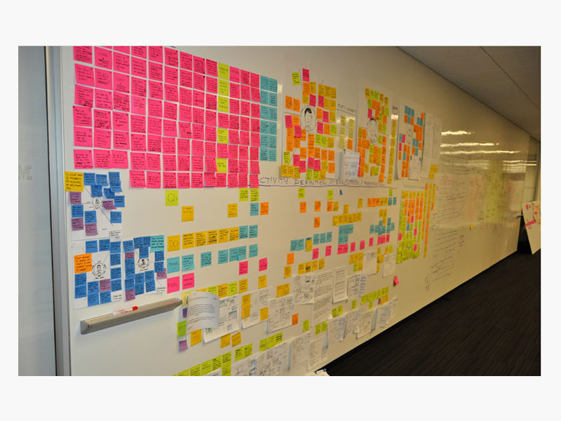

Trent Lutmer

Background
In 2013, I spent a year and a half as the design lead on Partner Engagement Manager or PEM. This was my first incursion as a design lead and worked closely with the engineering and product management teams. The team’s goal was to design a new product that would nurture partner relationships and build trust.
PEM, formally known as Multi-enterprise Relationship Manager, is an application that manages the relationship among users through on-going partner engagement. Users are able to create and monitor the lifecycle of various different process and easily surface supplier information.
Defining the Problem
We examined how we make managing campaigns easier, collaborative and constructive.
Understand workflows
To understand the pain points, we talked with several industries that managed campaigns.
- Manual processes cause errors, increase risk, and is a real waste of human resources
- Many times, we’re not entirely sure how the campaign is currently going -- we just heave a sigh of relief after D-day
- Onboarding takes too long and we often use people to mask the lag time

Goals
- Increase visibility on the campaign progress with an intutive dashboard
- Reduce the amount errors with automated entires
- Streamlined the process from roll out to reporting